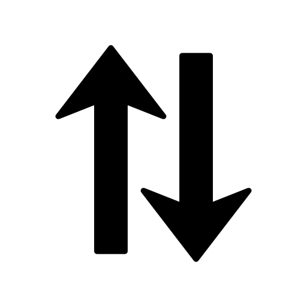

Praktisch Voorbeeld: Efficiëntie

Snelheid digitalWrite vs bitflip
#include <Arduino.h>
void setup()
{
pinMode(LED_BUILTIN, OUTPUT);
}
void loop()
{
digitalWrite(LED_BUILTIN, HIGH);
delay(1000);
digitalWrite(LED_BUILTIN, LOW);
delay(1000);
}
Compiled size: 1034 bytes (3.2%)
#include <avr/io.>
#include <util/delay.h>
int main(void)
{
DDRB = 1 << 5;
while (1)
{
_delay_ms(500);
PORTB ^= 1 << 5;
}
return 0;
}
Compiled size: 158 bytes (0.5%)
Snelheid digitalWrite vs bitflip


Om een programma te generen voor een Arduino board is er nog heel wat achterliggend proces nodig. Het framework verstop dit voor ons, zodat we moeilijk een beeld kunnen schetsen van de werking.
"Full Stack"
"Bare Metal"
Server: Dell R710
Single Board Computer: Raspberry Pi
System on Chip: Diagram
Single Board Computer: Raspberry Pi


Standalone Z80 PCB op Eurocard (16cm x 10cm)